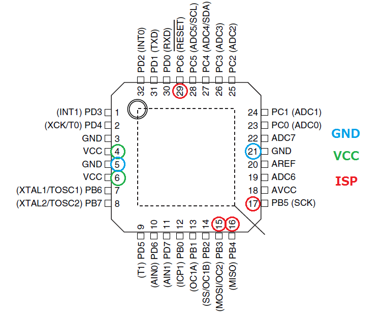
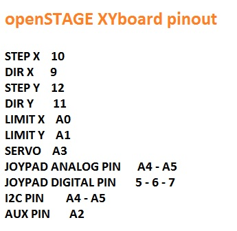

To pilot the machine I want to use GRB, but to use it I have to change the pin mapping. GRBL is wrote in C, but is similar to Arduino code.
I've searched a lot in internet and I discovered that the pin mapping is in cpu_map.h
the pins are described as:
#ifndef cpu_map_h
#define cpu_map_h
//----------------------------------------------------------------------------------------
#ifdef CPU_MAP_ATMEGA328P // (Arduino Uno) Officially supported by Grbl.
// Define serial port pins and interrupt vectors.
#define SERIAL_RX USART_RX_vect
#define SERIAL_UDRE USART_UDRE_vect
// Define step pulse output pins. NOTE: All step bit pins must be on the same port.
#define STEPPING_DDR DDRD
#define STEPPING_PORT PORTD
#define X_STEP_BIT 2 // Uno Digital Pin 2
#define Y_STEP_BIT 3 // Uno Digital Pin 3
#define Z_STEP_BIT 4 // Uno Digital Pin 4
#define STEP_MASK ((1<<X_STEP_BIT)|(1<<Y_STEP_BIT)|(1<<Z_STEP_BIT)) // All step bits
// Define step direction output pins. NOTE: All direction pins must be on the same port.
#define DIRECTION_DDR DDRD
#define DIRECTION_PORT PORTD
#define X_DIRECTION_BIT 5 // Uno Digital Pin 5
#define Y_DIRECTION_BIT 6 // Uno Digital Pin 6
#define Z_DIRECTION_BIT 7 // Uno Digital Pin 7
#define DIRECTION_MASK ((1<<X_DIRECTION_BIT)|(1<<Y_DIRECTION_BIT)|(1<<Z_DIRECTION_BIT)) // All direction bits
// Define stepper driver enable/disable output pin.
#define STEPPERS_DISABLE_DDR DDRB
#define STEPPERS_DISABLE_PORT PORTB
#define STEPPERS_DISABLE_BIT 0 // Uno Digital Pin 8
#define STEPPERS_DISABLE_MASK (1<<STEPPERS_DISABLE_BIT)
// Define homing/hard limit switch input pins and limit interrupt vectors.
// NOTE: All limit bit pins must be on the same port, but not on a port with other input pins (pinout).
#define LIMIT_DDR DDRB
#define LIMIT_PIN PINB
#define LIMIT_PORT PORTB
#define X_LIMIT_BIT 1 // Uno Digital Pin 9
#define Y_LIMIT_BIT 2 // Uno Digital Pin 10
#ifdef VARIABLE_SPINDLE // Z Limit pin and spindle enabled swapped to access hardware PWM on Pin 11.
#define Z_LIMIT_BIT 4 // Uno Digital Pin 12
#else
#define Z_LIMIT_BIT 3 // Uno Digital Pin 11
#endif
#define LIMIT_MASK ((1<<X_LIMIT_BIT)|(1<<Y_LIMIT_BIT)|(1<<Z_LIMIT_BIT)) // All limit bits
#define LIMIT_INT PCIE0 // Pin change interrupt enable pin
#define LIMIT_INT_vect PCINT0_vect
#define LIMIT_PCMSK PCMSK0 // Pin change interrupt register
// Define spindle enable and spindle direction output pins.
#define SPINDLE_ENABLE_DDR DDRB
#define SPINDLE_ENABLE_PORT PORTB
#ifdef VARIABLE_SPINDLE // Z Limit pin and spindle enabled swapped to access hardware PWM on Pin 11.
#define SPINDLE_ENABLE_BIT 3 // Uno Digital Pin 11
#else
#define SPINDLE_ENABLE_BIT 4 // Uno Digital Pin 12
#endif
#define SPINDLE_DIRECTION_DDR DDRB
#define SPINDLE_DIRECTION_PORT PORTB
#define SPINDLE_DIRECTION_BIT 5 // Uno Digital Pin 13 (NOTE: D13 can't be pulled-high input due to LED.)
// Define flood and mist coolant enable output pins.
// NOTE: Uno analog pins 4 and 5 are reserved for an i2c interface, and may be installed at
// a later date if flash and memory space allows.
#define COOLANT_FLOOD_DDR DDRC
#define COOLANT_FLOOD_PORT PORTC
#define COOLANT_FLOOD_BIT 3 // Uno Analog Pin 3
#ifdef ENABLE_M7 // Mist coolant disabled by default. See config.h to enable/disable.
#define COOLANT_MIST_DDR DDRC
#define COOLANT_MIST_PORT PORTC
#define COOLANT_MIST_BIT 4 // Uno Analog Pin 4
#endif
// Define user-control pinouts (cycle start, reset, feed hold) input pins.
// NOTE: All pinouts pins must be on the same port and not on a port with other input pins (limits).
#define PINOUT_DDR DDRC
#define PINOUT_PIN PINC
#define PINOUT_PORT PORTC
#define PIN_RESET 0 // Uno Analog Pin 0
#define PIN_FEED_HOLD 1 // Uno Analog Pin 1
#define PIN_CYCLE_START 2 // Uno Analog Pin 2
#define PINOUT_INT PCIE1 // Pin change interrupt enable pin
#define PINOUT_INT_vect PCINT1_vect
#define PINOUT_PCMSK PCMSK1 // Pin change interrupt register
#define PINOUT_MASK ((1<<PIN_RESET)|(1<<PIN_FEED_HOLD)|(1<<PIN_CYCLE_START))
#ifdef VARIABLE_SPINDLE
// Advanced Configuration Below You should not need to touch these variables
#define TCCRA_REGISTER TCCR2A
#define TCCRB_REGISTER TCCR2B
#define OCR_REGISTER OCR2A
#define COMB_BIT COM2A1
#define WAVE0_REGISTER WGM20
#define WAVE1_REGISTER WGM21
#define WAVE2_REGISTER WGM22
#define WAVE3_REGISTER WGM23
// NOTE: On the 328p, these must be the same as the SPINDLE_ENABLE settings.
#define SPINDLE_PWM_DDR SPINDLE_ENABLE_DDR
#define SPINDLE_PWM_PORT SPINDLE_ENABLE_PORT
#define SPINDLE_PWM_BIT SPINDLE_ENABLE_BIT // Shared with SPINDLE_ENABLE.
#endif // End of VARIABLE_SPINDLE
#endif
//----------------------------------------------------------------------------------------
Now I have to correct the file matching the port pin of the Atmega328 with my board
this is the scheme
 
The final GRBL configuration is possible to download HERE
You have just to rename the folder in "grbl" and copy it in the Arduino library directory
then from Library tab you can chose grbl and upload it with FTDI
cable.